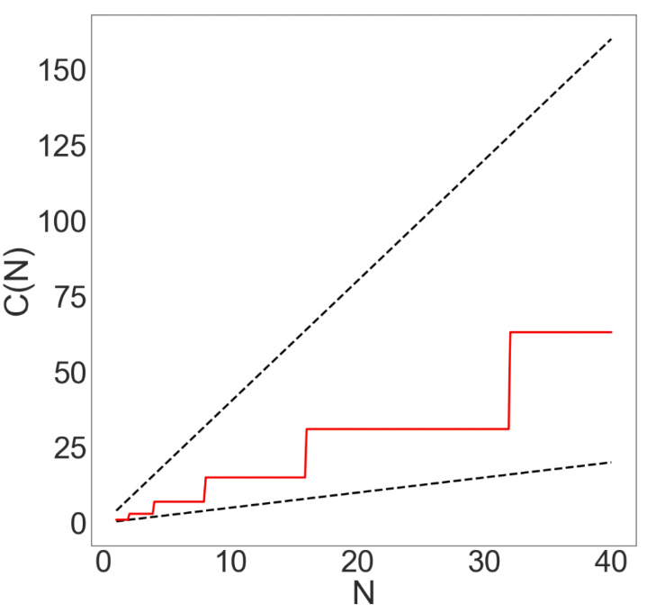
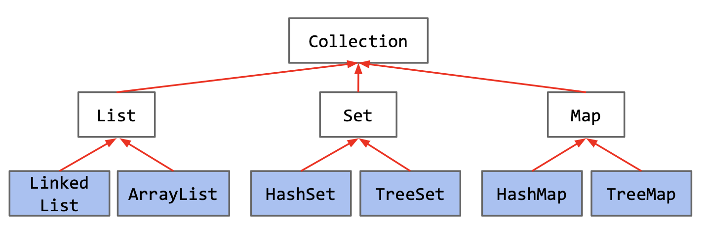
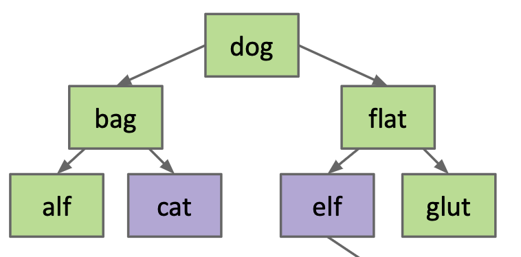
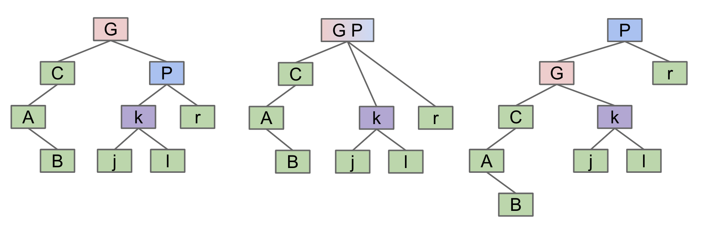
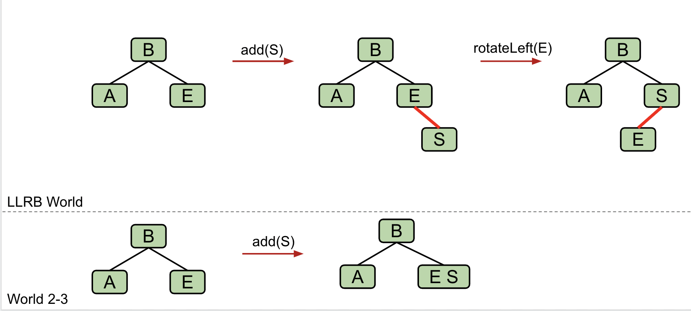
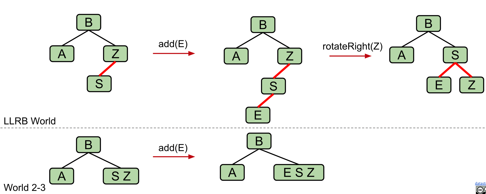
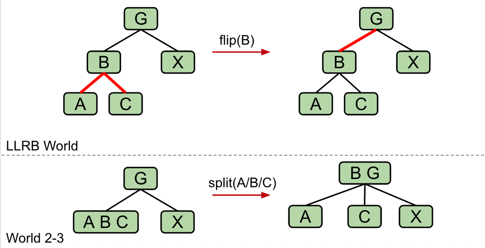

W1dsy2ew
CS61B Data Structure¶
Lec.1 Hello World Java¶
1.1 First Java Program¶
- 在Java中，所有代码都位于类 (Class) 中
- main 函数：所有运行的代码必须在一个声明为
public static void main(String[ ] args)的方法内
public class HelloWorld {
public static void main(String[] args) {
System.out.println("Hello World!");
}
}
1.2 在Java中定义函数¶
- Java中变量必须在使用之前声明且具有特定的类型(不可改变) 并且会在代码运行之前进行检验
- 所有函数都是类的一部分，称为类的方法 (method)
-
用 public static 定义函数, 函数需要返回值类型, 函数参数必须具有特定类型
-
Java中增强的for循环: Enhanced For Loop
-
不适用于需要修改集合元素的情况
- 不提供对元素索引的访问
for (元素类型 变量名 : 集合或数组) {
// 使用变量名访问当前遍历到的元素
}
e.g.
int[] numbers = {1, 2, 3, 4, 5};
for (int number : numbers) {
System.out.println(number);
}
Work Flow¶

- 这不是运行Java代码的唯一方式，但最常见
- 将
.java文件中的程序转换为可执行文件，在Java中主要有两个步骤：编译和解释执行 (compilation and interpretation) -
使用
.class文件的原因 -
.class文件经过了类型检查，使分发的(distributed)代码更安全 .class文件对机器更易执行，运行速度更快并能保护源代码文件
Lec.2 Defining and Instantiating Classes¶
2.1 静态方法/类方法 Class Methods¶
- 静态方法是类本身执行的方法，通过类名进行调用
-
静态变量: 是类固有的属性，而不归属于实例 尽量不要使用实例来访问静态变量，通过类名访问
-
关于
main方法 -
public: 到目前为止，我们所有的方法都以这个关键字开头 static: 它是一个静态方法，不与任何特定实例关联void: 它没有返回类型main: 这是方法的名称String[] args: 这是传递给main方法的参数
2.2 非静态方法/实例方法 Instance Methods¶
- 实例方法不包含
static关键字 - 实例方法需要通过一个已经实例化的对象
object来调用 - 一旦对象被实例化，它可以被赋值给已声明的适当类型的变量
- 一个类的变量
variables和方法methods也称为类的成员member - 通过点操作符
.访问类的成员
public class Dog {
public int weightInPounds; // 非静态变量
public void makeNoise() { // 实例方法
if (weightInPounds < 10) {
System.out.println("yipyipyip!");
} else if (weightInPounds < 30) {
System.out.println("bark. bark.");
} else {
System.out.println("woof!");
}
}
}
使用dog类的示例方法
public class DogLauncher {
public static void main(String[] args) {
Dog d;
d = new Dog();
d.weightInPounds = 20;
d.makeNoise();
}
}
2.3 数组实例化、对象数组¶
-
数组实例化
-
对象数组
public class DogArrayDemo { public static void main(String[] args) { Dog[] dogs = new Dog[2]; dogs[0] = new Dog(8); dogs[1] = new Dog(20); dogs[0].makeNoise(); } }注意
new的两种不同用法：一次用于创建可以容纳两个Dog对象的数组，两次用于创建每个实际的Dog
Lec.3 Testing¶
Step Into: 步入，在调试时会进入到方法的内部Step Over: 步过，在调试时不会进入到方法内部- 集成测试：除去对代码的单元测试，需要通过集成测试确保这些单元能够正确的进行协同工作
Test-Driven-Development (TDD): 测试驱动开发，即先编写测试，在编写代码本身- 确定一个新功能
- 为此功能编写单元测试
- 运行测试，它应该会失败
- 编写通过测试的代码
- Optional：重构代码
Lec.4 References, Recursion, and Lists¶
4.1 Primary Types¶
Java有8种原始类型，分别是byte,short,int,long,float,double,boolean,charJava不初始化变量，以保证安全- 通过一个变量向另一个变量使用
=进行赋值时，是将一个变量代表的数据块中的位bits赋给了另一个变量 - 进行参数传递时也是复制位bits
4.2 Reference Types¶
- 除了原始类型之外的所有类型，都是引用类型
- 在声明特定类型变量的时候，
Java会找到连续的内存空间，正好容纳该类型的一个事物; 并且会在内部创建一个条目，将每个变量名映射到位盒中的第一个位的位置Java不允许直接找到数据储存的位置 (与C语言不同) - 当实例化一个对象时，编译器在分配好空间之后会默认的向里面填充进默认值
(e.g.
0null) 随后构造器constructor向里面填充其它值 - 可以把new理解为返回了特定类实例的64位地址
4.3 Instantation of Arrays¶
-
数组的声明：
两个声明都创建了64位的内存空间，用来保存分配的数组空间的地址 2. 数组的实例化
new关键字创建了5个每个32位的连续的内存空间，并将整体对象的地址返回以分配给x
4.4 IntList and Linked Data Structures¶
Reference to Classcode/Lec4_Reference_Recursion_and_Lists
Lec.5 SLLists, Nested Classes and Sentinel Nodes¶
-
定义节点
-
创建一个SLList的单独类 (user will interact with)
-
与
IntList定义一个新链表时的对比隐藏了空指针
null的细节 3.addFirst以及getFirst方法/** Adds an item to the front of the list. */ public void addFirst(int x) { first = new IntNode(x, first); } /** Retrieves the front item from the list. */ public int getFirst() { return first.item; }- 相对于
IntList避免了显式的new关键字的使用
- 相对于
-
嵌套类
Nested Classes嵌套类对代码没有有意义的影响，只是为了代码的直观public class SLList { public class IntNode { public int item; public IntNode next; public IntNode(int i, IntNode n) { item = i; next = n; } } private IntNode first; public SLList(int x) { first = new IntNode(x, null); } ··· }- 如果嵌套类不需要使用
SLList的任何方法或者变量，则可以将其声明为static，意味着静态类中的方法不能访问封闭类的任何成员 - 这可以节省内存，因为每个
IntNode不再需要知道如何访问其封闭的SLList
- 如果嵌套类不需要使用
-
addLast和size方法/** 在列表末尾添加一个项目。 */ public void addLast(int x) { IntNode p = first; /* 将p推进到列表末尾。 */ while (p.next != null) { p = p.next; } p.next = new IntNode(x, null); } /** 从IntNode p开始返回列表的大小。 */ private static int size(IntNode p) { if (p.next == null) { return 1; } return 1 + size(p.next); } public int size() { return size(first); }- 此处有两个
size方法，具有相同名称但不同函数签名的两个方法是重载的
- 此处有两个
-
对
size的改进 -
重写
size方法
public class SLList {
... /* IntNode声明省略。 */
private IntNode first;
private int size;
public SLList(int x) {
first = new IntNode(x, null);
size = 1;
}
public void addFirst(int x) {
first = new IntNode(x, first);
size += 1;
}
public int size() {
return size;
}
...
}
-
这种将重要数据缓存以提高检索速度的做法称为缓存
-
创建空列表
- 修复
addLast方法以防止其向空列表插入时崩溃
- 修复
-
不变量是数据结构中总是成立的一个事实 带有哨兵节点的SLList至少有以下不变量： - sentinel引用始终指向一个哨兵节点 - 如果存在前项，则始终在sentinel.next.item - size变量始终是已添加项目的总数
Lec.6 DLList and Arrays¶
6.1 DLList¶
- Sentinel Nodes：将双向链表的第一个节点和最后一个节点分别由哨兵节点的
next和prev指向 -
Generic DLList：泛型双向链表，允许包含任何引用类型
-
在实现数据结构的.java文件中，只在文件顶部的类名后指定泛型类型名称一次
public class DLList<BleepBlorp> {
private IntNode sentinel;
private int size;
public class IntNode {
public IntNode prev;
public BleepBlorp item;
public IntNode next;
...
}
...
}
BleepBlorp可以用其他名字代替- 在声明期间将相应的引用类型放在尖括号
<>内，并在实例化期间使用空尖括号<>
- 如果需要对原始类型进行泛型实例化，请使用
Integer、Double、Character、Boolean、Long、Short、Byte或Float代替它们的原始等价物
DLList<Integer> d1 = new DLList<>(5);
d1.insertFront(10);
/* 但是在实例化时在尖括号中加上数据类型也可以，尽管有些多余 */
DLList<Integer> d1 = new DLList<Integer>(5);
6.2 Array¶
-
数组的创建
x: 创建一个长度为3的数组，并用默认的int值0填充y: 创建了一个长度为5的数组，包含这五个特定元素z: 与前者有相同的行为，省略了new关键字的使用
-
arraycopy方法System.arraycopy需要五个参数：- 作为源的数组
- 源数组中的起始位置
- 作为目标的数组
- 目标数组中的起始位置
- 要复制的项目数量
等同于
python中的x[3:5] = b[0:2]
-
java中的二维数组：实质上是数组的数组int[][] pascalsTriangle; pascalsTriangle = new int[4][]; int[] rowZero = pascalsTriangle[0]; pascalsTriangle[0] = new int[]{1}; pascalsTriangle[1] = new int[]{1, 1}; pascalsTriangle[2] = new int[]{1, 2, 1}; pascalsTriangle[3] = new int[]{1, 3, 3, 1}; int[] rowTwo = pascalsTriangle[2]; rowTwo[1] = -5; int[][] matrix; matrix = new int[4][]; // Java allows you to create an // array of arrays in two steps. matrix = new int[4][4]; // Now, each array in the matrix array // has been initialized to length 4. int[][] pascalAgain = new int[][]{{1}, {1, 1}, {1, 2, 1}, {1, 3, 3, 1}}; -
数组与类
-
数组的内存是编号的，使用
[]访问，类的内存空间是命名的，使用.操作符访问 - 数组储存的数据必须是相同类型，而类可以是不同类型
Lec.7 ALists, Resizing, vs. SLists¶
- 对
AList的基本表示
public class AList {
private int[] items;
private int size;
public AList() {
items = new int[100]; size = 0;
}
public void addLast(int x) {
items[size] = x;
size += 1;
}
public int getLast() {
return items[size - 1];
}
public int get(int i) {
return items[i];
}
public int size() {
return size;
}
}
-
AList Invariants不变量：
-
要插入的下一个项目的位置始终是
size size始终是AList中的项目数量-
列表中的最后一个项目始终位于位置
size - 1 -
Geometric Resizing 以几何级数动态调整数组大小
-
相对与
+，*对增添元素的效率更高 (显而易见)
public void insertBack(int x) {
if (size == items.length) {
resize(size * RFACTOR);
}
items[size] = x;
size += 1;
}
-
Memory Performance：
-
上面的方法会导致删除数据后大量空间被浪费
-
可以额外定义一个
"usage ratio" R，其大小等于列表的大小除以数组的长度，当R小于某个值时(e.g. 0.25)，数组长度减小(e.g. 变为原来的二分之一) -
Generic ALists泛化数组列表
-
Java不允许创建泛型对象数组
- 对于删除的项，要手动将其变为
null，因为此时引用仍然存在，java不会自动对添加到列表的对象进行回收
Lec.8 Interface and Implementation Inheritance¶
8.1 Hypernyms, Hyponyms, and Interface Inheritance¶
-
上位词
Hypernyms和Hyponyms构成了一种层次结构Hierarchy -
List is a hypernym of SLList and AList
-
java中通过两步表达这一过程- 为上位词定义一个引用类型
List61B.java - 指定
SLList和AList是该类型的下位词
- 为上位词定义一个引用类型
-
使用关键词
interface来定义List61B -
这个“接口”定义列表能实现什么
what，但不关心列表的实现方式how
public interface List61B<Item> {
public void addFirst (Item x);
public void getFirst ();
public Item get (int i);
...
}
- 改进过后的其他函数则可变为
- 子类必须覆盖在接口中声明的所有方法
8.2 Overloading and Overriding¶
-
Defination
-
Overloading: 同一个类中可以有多个相同名字的方法，只要它们的函数签名不同即可与继承无关 -
Overriding: 重写是指子类中有一个方法与父类中的某个方法具有相同的方法名，返回类型和参数列表，子类通过重写方法可以提供专属的实现与继承有关 -
@Override标签 -
如果出现拼写错误，编译器会提示修正
- 提醒程序员这个方法来自于超类
8.3 Implementation Inheritance: Default Methods¶
使用default关键字使得子类也可以从接口中继承实现，这个默认方法可以在子类中重写override
public interface List61B<Item> {
public void addFirst(Item x);
...
default public void print() {
for (int i = 0; i < size(); i += 1) {
System.out.print(get(i) + " ");
}
System.out.println();
}
}
8.4 Static and Dynamic Type, Dynamic Method Selection¶
-
静态类型是指变量在编译时的类型
-
在声明
declaration时确定，永远不会改变 -
动态类型是变量在运行时的类型
-
在实例化
instantiation的时候确定 (e.g. when usingnew) -
等于所指向对象的类型
-
Dynamic Method Selection For Overridden Methods 动态方法选择 如果通过一个变量调用对象的方法
-
静态类型
X - 动态类型
Y如果在Y中重写了这个方法，那么Y中重写的方法会被调用
8.5 Signature Selection, Dynamic Method Selection¶
public interface Animal {
default void greet(Animal a) {
print("hello animal");
}
default void sniff(Animal a) {
print("sniff animal");
}
default void praise(Animal a) {
print("u r cool animal");
}
}
public class Dog implements Animal {
@Override
void sniff(Animal a) {
print("dog sniff animal");
}
/* default void praise(Animal a) */
void praise(Dog a) {
print("u r cool dog");
}
}
Animal a = new Dog();
Dog d = new Dog();
a.greet(d); // "hello animal"
a.sniff(d); // "dog sniff animal"
d.praise(d); // "u r cool dog"
a.praise(d); // "u r cool animal"
考虑动态方法的选择过程分为两步
- 编译时：决定调用函数的签名 签名仅由静态类型决定
Animal a = new Dog();
Dog d = new Dog();
a.greet(d); // greet(Animal a)
a.sniff(d); // sniff(Animal a)
d.praise(d); // praise(Dog a)
a.praise(d); // praise(Animal a)
- 运行时：调用对象的动态类型使用具有确切此类型的签名的方法 (如果有)
Animal a = new Dog();
Dog d = new Dog();
a.greet(d); // greet(Animal a) - "hello animal"
a.sniff(d); // sniff(Animal a) - "dog sniff animal"
d.praise(d);// praise(Dog a) - "u r cool dog"
a.praise(d);// praise(Animal a) - "u r cool animal"
8.6 Interface vs. Implementation Inheritance¶
- 接口继承：以一种强大、简单的方式泛化代码
- 实现继承：子类可以依赖接口或者超类的方法，子类可以自行决定是否覆盖默认实现
Lec.9 Extends, Casting, Higher Order Functions¶
9.1 extends关键字¶
- 当一个类是接口的下义词时，我们使用
implements - 让一个类是另一个类的下义词 (而不是接口)，使用
extends
/* implements 关键字 */
SLList<Blorp> implements List61B<Blorp>
/* extends 关键字 */
public class RotatingSLList<Blorp> extends SLList<Blorp>
-
由于
extends，RotatingSLList继承了SLList的所有成员: -
所有实例和静态变量
- 所有方法
- 所有嵌套类
- 构造函数不继承！
-
不能直接访问在超类中定义的私有方法及变量 **通过
super.访问 -
构造函数行为
java规定所有构造函数必须先调用超类的构造函数- 可以使用关键字
super(没有点.)来显式调用构造函数，如果没有显式调用，java将自动调用默认的超类构造函数
/* 一下为等价的构造函数 */ public VengefulSLList() { deletedItems = new SLList<Item>(); } public VengefulSLList() { super(); deletedItems = new SLList<Item>(); }- 如果想使用除无参数构造函数之外的超构造函数，可以给
super传递参数
-
事实上，
java的每种类型都是object类的下位
9.2 封装encapsulation¶
-
模块：一组方法作为一个整体协同工作完成相关任务。
- 如果一个模块的实现被完全隐藏，只能通过文档化的接口访问，那么这个模块就可以被视为是封装的
-
封装的优点
-
数据隐藏：隐藏对象的状态信息，只暴露有限的操作界面
- 接口与实现分离：封装强调了接口 (
public方法) 与实现 (private属性和方法) 的分离，使得修改实现不会影响使用该接口的代码 - 灵活性和扩展性：在不影响其他模块的情况下，更容易修改和扩展模块的功能
9.3 类型转换cast¶
-
使用
new关键字的表达式决定动态类型 -
将所需类型放在表达式前的括号中，使编译器将表达式视为不同动态类型
9.4 High Order Functions高阶函数¶
-
定义：将另一个函数视为数据的函数 *(e.g. 将函数作为输入)
public interface IntUnaryFunction { int apply(int x); } public class TenX implements IntUnaryFunction { public int apply(int x) { return 10 * x; } } public class HoFDemo { public static int do_twice(IntUnaryFunction f, int x) { return f.apply(f.apply(x)); } public static void main(String[] args) { System.out.println(do_twice(new TenX(), 2)); } }
Lec.10 Subtype Polymorphism, Comparators, Comparable¶
-
子类多态性：为不同类型
type的实体提供相同类型的接口interface通过继承和接口实现对象的类型的替换 -
如一个包含
animal类型的数组可以包含其子类型如catdog等类型的元素 -
显式高阶函数：允许函数作为参数传递或者返回函数的函数 函数式编程思想
-
比较器
comparator -
在
Java中，Comparator接口是一个功能接口，用于定义对象的比较规则 compare(T o1, T o2): 如果第一个参数小于第二个参数，返回负数；如果相等，返回0；如果大于，返回正数-
equals(Object obj): 这个方法用于比较当前比较器是否与另一个对象相等 -
比较器的实现
-
定义一个类
class实现Comparator接口 - 实现
compare方法，根据自定义的逻辑比较两个对象
/* 比较两个字符串的大小，忽略大小写 */
public class StringComparator implements Comparator<String> {
@Override
public int compare(String s1, String s2) {
return s1.compareToIgnoreCase(s2);
}
}
Java 8引入了Lambda匿名表达式，使得创建比较器更加简洁
-
总结
-
Comparable：一个对象自身与另一个对象比较，定义了一个类型的
natural order自然顺序compareTo方法 - Comparator：类似一个第三方去比较两个对象
由于
compareTo方法只有一个，所以当我们需要多种比较方式是，我们应该选择Comparator
Lec.11 Exceptions, Iterators, Object Methods¶
The end of Java!
11.1 抛出异常exception的语法¶
throw new ExceptionObject(parameter1, ...)
/* Associates the specified value with the specified key in this map.
Throws an IllegalArgumentException if the key is null. */
public void add(T x) {
if (x == null) {
throw new IllegalArgumentException("can't add null");
}
if (contains(x)) {
return;
}
items[size] = x;
size += 1;
}
11.2 Iterator¶
-
enhanced loop可见Lec1.2.4可转换为：
-
迭代器的实现
-
接口：
public interface Iterator<T> {
boolean hasNext();
T next();
}
public interface Iterable<T> {
Iterator<T> iterator();
}
public interface List<T> extends Iterable<T>{
...
}
/* 嵌套在ArraySet类的内部 */
private class ArraySetIterator implements Iterator<T> {
private int wizPos;
/* 构造函数 */
public ArraySetIterator() {
wizPos = 0;
}
/* 检查 */
public boolean hasNext() {
return wizPos < size;
}
public T next() {
T returnItem = items[wizPos];
wizPos += 1;
return returnItem;
}
}
/* 实现Iratable接口，从而让ArraySet类能使用增强for循环 */
public Iterator<T> iterator() {
return new ArraySetIterator();
}
-
完整实现：
import java.util.Iterator; public class ArraySet<T> implements Iterable<T> { private T[] items; private int size; // the next item to be added will be at position size public ArraySet() { items = (T[]) new Object[100]; size = 0; } /* Returns true if this map contains a mapping for the specified key. */ public boolean contains(T x) { for (int i = 0; i < size; i += 1) { if (items[i].equals(x)) { return true; } } return false; } /* Associates the specified value with the specified key in this map. Throws an IllegalArgumentException if the key is null. */ public void add(T x) { if (x == null) { throw new IllegalArgumentException("can't add null"); } if (contains(x)) { return; } items[size] = x; size += 1; } /* Returns the number of key-value mappings in this map. */ public int size() { return size; } /** returns an iterator (a.k.a. seer) into ME */ public Iterator<T> iterator() { return new ArraySetIterator(); } private class ArraySetIterator implements Iterator<T> { private int wizPos; public ArraySetIterator() { wizPos = 0; } public boolean hasNext() { return wizPos < size; } public T next() { T returnItem = items[wizPos]; wizPos += 1; return returnItem; } } public static void main(String[] args) { ArraySet<Integer> aset = new ArraySet<>(); aset.add(5); aset.add(23); aset.add(42); //iteration for (int i : aset) { System.out.println(i); } } }
11.3 Object Methods¶
-
所有的类都从最顶层的
Object类继承了若干方法 -
String toString() boolean equals(Object obj)Class<?> getClass()int hashCode()protected Object clone()protected void finalize()void notify()void notifyAll()void wait()void wait(long timeout)-
void wait(long timeout, int nanos) -
为ArraySet类重写
toString方法： -
如果直接使用
+，会每次都会创建一个新的字符串对象，非常低效 -
StringBuilder创建一个可变的字符串对象 -
重写
equals方法： -
equals与==具有不同的行为 ==检查两个盒子是否包含相同的内容。对于基本类型，这意味着检查值是否相等。对于对象，这意味着检查地址/指针是否相等equals(Object o)默认情况下，类似于==，检查this的内存地址是否与o相同-
重写后版本：
public boolean equals(Object other) { if (this == other) { // 避免额外工作 return true; } if (other == null) { // 避免异常 return false; } if (other.getClass() != this.getClass()) { return false; // 避免异常 } ArraySet<T> o = (ArraySet<T>) other; if (o.size() != this.size()) { return false; } for (T item : this) { if (!o.contains(item)) { return false; } } return true; } -
实现
equals需要遵守的规则 -
equals必须是等价关系- 自反性：
x.equals(x)为true - 对称性：如果
x.equals(y)，则y.equals(x)也为true - 传递性：如果
x.equals(y)和y.equals(z)，则x.equals(z)也为true
- 自反性：
- 它必须接受一个
Object参数，以便覆盖原始的.equals()方法 - 如果
x.equals(y)，那么只要x和y保持不变：x必须继续等于y - 对于
null，它永远不为true，x.equals(null)必须为false
Lec.13 Introduction to Asymptotic Analysis
渐进性分析¶
-
衡量代码效率
Measuring Code Efficiency -
编程成本
Programming cost：开发时间以及代码的可读性、可维护性 -
执行成本
Programming cost：程序的执行时间和内存需求 -
渐进分析
Asymptotic Analysis: -
(只)考虑最坏情况
care only about the worst case - 忽略低阶项
Ignore lower order terms - 忽略乘法常数
Ignore any coefficients -
认为所有操作耗时相等
All operations take the same time -
渐进符号
Asymptotic Notation- Big Theta (Θ)：表示函数的增长率
- N3 + 3N4 ∈ Θ(N4)
- 这意味着存在两个正的常数
k1和k2，使得对于足够大的N，下列不等式成立 (表示R(N)的增长率与f(N)相同):k1 * f(N) ≤ R(N) ≤ k2 * f(N) - Big O (Ο)：表示增长的上界
- 如果有一个函数
R(N)的增长不超过g(N)，我们可以用Big O表示： - R(N) ∈ O(g(N))
- 存在一个正的常数
k2，使得对于足够大的N，下列不等式成立：R(N) ≤ k2 * g(N) - Big Omega (Ω)：表示增长的下界
- 如果有一个函数
R(N)的增长至少是g(N)，我们可以用Big Omega表示： - N4 ∈ Ω(N3)
- 存在一个正的常数
k1，使得对于足够大的N，下列不等式成立：R(N) ≥ k1 * g(N) - Big Theta (Θ) 的用途最为广泛，因为它提供了函数增长的准确速率。Big O (Ο) 用于最坏情况分析，而 Big Omega (Ω) 用于最好情况分析
Lec.14 Disjoin Sets 不相交集/并查集¶
14.1 基本操作¶
connect(x, y)：连接两个元素x和yisConnected(x, y)：判断两个元素是否连接（直接或间接连接）
public interface DisjointSets {
/** 连接两个元素p和q */
void connect(int p, int q);
/** 判断两个元素是否连通 */
boolean isConnected(int p, int q);
}
14.2 Through List of Set¶
- 通过整数集合的列表，e.g.
[{0, 1, 2, 4}, {3, 5}, {6}]直观但是糟糕 - 缺点
- 所有的查找操作都需要遍历全部的集合
- Overall runtime of
Θ(N).
14.3 QuickFind 快速查找¶
- 使用一个数组
id，记录每一个元素所属的集合编号 - Performance
isConnected(p, q)：通过比较id[p]和id[q]是否相等实现，时间复杂度为O(1)connect(p, q)：对整个id数组进行遍历，将所有等于id[p]的元素更新为id[q]，时间复杂度为O(N)，其中N为元素总数QuickFind方法简单但在处理大量连接操作时效率低下
public class QuickFindDS implements DisjointSets {
private int[] id; // 用于存储每个元素所属的集合编号
/* 构造函数，初始化N个元素，每个元素自己的集合编号等于自己的索引（初始有N个集合）*/
public QuickFindDS(int N) {
id = new int[N];
for (int i = 0; i < N; i++) {
id[i] = i;
}
}
/* 通过比较集合编号判断是否在同一个集合中 */
public boolean isConnected(int p, int q) {
return id[p] == id[q];
}
// 连接两个元素，将属于id[p]集合的所有元素更新为id[q]
public void connect(int p, int q) {
int pid = id[p]; // 获取p的集合编号
int qid = id[q]; // 获取q的集合编号
for (int i = 0; i < id.length; i++) {
if (id[i] == pid) {
id[i] = qid; // 将属于id[p]集合的元素更新为id[q]
}
}
}
}
14.4 QuickUnion 快速连接¶
Quick Union改进了Quick Find，通过使用树结构来表示集合，每个元素指向它的父节点parent node- Performance：
isConnected(p, q)：通过寻找根节点进行判断，时间复杂度为树高度O(H)connect(p, q)：找到两个元素的根节点root node，将一个根节点连接到另一个根节点，时间复杂度为O(H)QuickUnion在处理过程中可能导致树高度不断增加，从而影响查询和连接操作的效率
public class QuickUnionDS implements DisjointSets {
private int[] parent; // 用于存储每个元素的父节点
/* 构造函数，初始化N个元素，每个元素的父节点是它自己 */
public QuickUnionDS(int N) {
parent = new int[N];
for (int i = 0; i < N; i++) {
parent[i] = i;
}
}
/* 查找元素p的根节点 */
private int find(int p) {
while (p != parent[p]) {
p = parent[p]; // 不断向上找到根节点
}
return p;
}
/* 判断两个元素是否在同一个集合中，通过查找它们的根节点 */
public boolean isConnected(int p, int q) {
return find(p) == find(q);
}
/* 连接两个元素，将p的根节点连接到q的根节点 */
public void connect(int p, int q) {
int rootP = find(p); // 查找p的根节点
int rootQ = find(q); // 查找q的根节点
if (rootP != rootQ) {
parent[rootP] = rootQ; // 将p的根节点连接到q的根节点
}
}
}
14.5 Weighted Quick Union (WQU) 加权快速合并¶
- 加权快速合并通过记录树的大小（即树中元素的数量）来选择根节点，从而避免树高度过高
- 将较小树的根节点连接到较大树的根节点，从而优化数的高度，使树更加扁平化
- 相较于
QuickUnion，其时间复杂度为O(log N) - 实际上，通过记录树的高度进行比较也能达到相同的效果(without improvement)，但是实现的代码更为复杂 (more complex)
public class WeightedQuickUnionDS implements DisjointSets {
private int[] parent; // 用于存储每个元素的父节点
private int[] size; // 用于存储每个树的大小
/* 构造函数，初始化N个元素，每个元素的父节点是它自己，且大小为1 */
public WeightedQuickUnionDS(int N) {
parent = new int[N];
size = new int[N];
for (int i = 0; i < N; i++) {
parent[i] = i;
size[i] = 1;
}
}
/* 查找元素p的根节点 */
private int find(int p) {
while (p != parent[p]) {
p = parent[p]; // 不断向上找到根节点
}
return p;
}
/* 判断两个元素是否在同一个集合中，通过查找它们的根节点 */
public boolean isConnected(int p, int q) {
return find(p) == find(q);
}
/* 连接两个元素，将较小的树连接到较大的树 */
public void connect(int p, int q) {
int rootP = find(p); // 查找p的根节点
int rootQ = find(q); // 查找q的根节点
if (rootP != rootQ) {
if (size[rootP] < size[rootQ]) {
parent[rootP] = rootQ; // 将较小树的根节点连接到较大树的根节点
size[rootQ] += size[rootP]; // 更新根节点q的大小
} else {
parent[rootQ] = rootP; // 将较小树的根节点连接到较大树的根节点
size[rootP] += size[rootQ]; // 更新根节点p的大小
}
}
}
}
14.6 Weighted Quick Union with Path Compression (WQUPC)¶
- 路径压缩技术在每次查找操作中，将路径上的所有结点直接连接到根节点，从而优化树的高度，使树更加扁平化
- Performance
- 在进行大量
isConnected和connect操作时，能够将时间复杂度优化为几乎常量级别 -
其均摊时间复杂度为
O(log* N)，log* N是Iterated Log，实际应用中，这个值非常小，通常不超过5log* N:不断进行log操作最后等于1的次数
public class WQUDSWithPathCompression implements DisjointSets {
private int[] parent; // 用于存储每个元素的父节点
private int[] size; // 用于存储每个树的大小
/* 构造函数，初始化N个元素，每个元素的父节点是它自己，且大小为1 */
public WQUDSWithPathCompression(int N) {
parent = new int[N];
size = new int[N];
for (int i = 0; i < N; i++) {
parent[i] = i;
size[i] = 1;
}
}
/* 查找元素p的根节点，并使用路径压缩 */
private int find(int p) {
if (p != parent[p]) {
parent[p] = find(parent[p]); // 路径压缩，将p的父节点直接连接到根节点
}
return parent[p];
}
/* 判断两个元素是否在同一个集合中，通过查找它们的根节点 */
public boolean isConnected(int p, int q) {
return find(p) == find(q);
}
/* 连接两个元素，将较小的树连接到较大的树 */
public void connect(int p, int q) {
int rootP = find(p); // 查找p的根节点
int rootQ = find(q); // 查找q的根节点
if (rootP != rootQ) {
if (size[rootP] < size[rootQ]) {
parent[rootP] = rootQ; // 将较小树的根节点连接到较大树的根节点
size[rootQ] += size[rootP]; // 更新根节点q的大小
} else {
parent[rootQ] = rootP; // 将较小树的根节点连接到较大树的根节点
size[rootP] += size[rootQ]; // 更新根节点p的大小
}
}
}
}
14.7 总体运行时间比较¶
| Implementation | Runtime |
|---|---|
ListOfSetsDS |
O(NM) |
QuickFindDS |
Θ(NM) |
QuickUnionDS |
O(NM) |
WeightedQuickUnionDS |
O(M log N) |
WQUDSWithPathCompression |
O(M α(N)) |
Lec.15 Asymptotics II 一些函数的渐进性分析¶
-
ForLooppublic static void printParty(int N) { for (int i = 1; i <= N; i = i * 2) { for (int j = 0; j < i; j += 1) { System.out.println("hello"); int ZUG = 1 + 1; } } }C(N) = 1 + 2 + 4+ ... + N如果N是2的幂- 如图：
R(N) = Θ(1 + 2 + 4 + 8 + … + N) = Θ(N)
-
Recursion- C(N) = 1 + 2 + 4 + ... + 2N-1 = 2N - 1
- R(N) = Θ(2N)
-
Binary Search- R(N) = Θ(log2N) = Θ(log N)
-
合并已排序的数组
-
R(N) = Θ(N)
-
Mergesort归并排序- 如果列表大小为 1，返回。否则：
- 对左半部分进行归并排序
- 对右半部分进行归并排序
- 合并结果
- 分治的层数 k = log2N
- 每层进行合并操作的次数都为 N
- R(N) = Θ(Nlog(N))
Lec.16 ADTs, Sets, Maps, BSTs¶
16.1 ADTs 抽象数据类型¶
Abstract Data Type: 由其操作Operations定义，而不是由其实现方式Implementation定义ArrayDeque和LinkedListDeque具有相同的方法，但实现方式大相径庭，因此说ArrayDeque和LinkedListDeque是Deque ADT的实现 (inherit from theDequeinterface)
- 常见的抽象数据结构：
- 栈
stack：支持后进先出检索元素的结构push(int x)：将x放在栈顶int pop()：取出栈顶元素
- 列表
list：有序元素集合add(int i)：添加元素int get(int i)：获取索引i处的元素
- 集合
set：无序唯一元素集合（不重复）add(int i)：添加元素contains(int i)：返回集合是否包含该值的布尔值
- 映射
map：键/值对集合put(K key, V value)：将键值对放入映射中V get(K key)：获取与键对应的值
- Notes：加粗的
ADT是一个更大的总体接口Collections的子接口  接口和类之间的关系，接口是白色，类是蓝色
- 栈
16.2 Binary Search Tree 二叉搜索树¶
-
树的定义：树由节点和连接这些节点的边组成
- Constraints：任何两个节点之间只有一条路径
- 根节点
root node：没有父节点的节点 - 叶节点
leaf node：没有子节点的节点
-
- 二叉树：在树的基础上，每个节点只能有0、1或2个子节点 (binary property constraint)
-
二叉搜索树：在二叉树的基础上，对于树中的每个节点
X： - 左子树 (subtree) 中的每个键都小于X的键 - 右子树中的每个键都大于X的键 -
搜索
Searchstatic BST find(BST T, Key sk) { if (T == null) return null; if (sk.equals(T.key)) return T; else if (sk < T.key) return find(T.left, sk); else return find(T.right, sk); }- 如果
X大于根节点，我们继续移动到根的右子节点，反之，移动到根的左子节点 - 递归地重复此过程，直到
- 找到项目
- 到达叶子节点在这种情况下，树不包含该项目
- 查找操作将以
log n时间运行，因为树的高度是log n
- 如果
-
插入
Insertstatic BST insert(BST T, Key ik) { if (T == null) return new BST(ik); if (ik < T.key) T.left = insert(T.left, ik); else if (ik > T.key) T.right = insert(T.right, ik); return T; }- 首先在树中搜索节点。
- 如果找到，do nothing
- 如果没找到，此时已经位于叶节点了，在叶节点的左侧或右侧添加新元素，同时保持
BST的属性
-
删除
Delete-
可能的情况
- 无子节点
- 有一个子节点
- 有两个子节点
-
无子节点 只删除其父指针，节点最终将被垃圾收集器清除
-
一个子节点 只重新分配父的子指针到节点的子节点，节点最终将被垃圾收集。
-
两个子节点
- 分析：新节点必须：
- 比左子树中的所有内容都要大
- 比右子树中的所有内容都要小 
- 上图中，假设要删除的是
dog节点，那么左子树中的cat节点 (左子树的最右节点) 和右子树的elf节点 (右子树的最左节点) 满足要求 - 因此用
cat或elf替换dog节点，然后删除旧的cat或elf节点 - 这种方法被称为
Hibbard deletion
- 分析：新节点必须：
-
Lec.17 B-Trees¶
17.1 BST二叉搜索树的缺点¶
- 在最好情况下，树的高度是
Θ(log𝑁) - 在最坏情况下，树的高度是
Θ(𝑁)，此时BST退化成了一个链表
17.2 B树的使用¶
- 通过根节点的分割，每一个节点都被推向下一个深度
- 内部节点以及叶节点自身的分割则不会引起深度的变化
- 通过设置一个常数L来约束每个节点中最多包含的项目数量
- 每个节点限制为3个项目的B树也称为2-3-4树或2-4树(一个节点可以有2、3或4个子节点)
- 设置每个节点2个项目的B树是2-3树
17.3 B树的不变量¶
- 所有叶节点到根节点的距离相同(深度一致)
- 具有k个项目的非叶节点必须恰好具有k+1个子节点
- 这两个不变量保证了B树的高度为
logN
17.4 B树的性能¶
- B树的高度在logL+1N到log2N之间，因此B树的整体高度始终为B-Tree的整体高度始终是
Θ(logN) - 其余如
contain``add等操作的运行时间均为Θ(logN)
Lec.18 Red Black Trees红黑树¶
18.1 Rotating Trees¶
- rotateLeft(G)：将
G的右子节点x变为G的新左子节点 - rotateRight(G)：将
G的左子节点x变为G的新右子节点 
- 通过树的旋转，能缩短或延长树的高度，同时保留搜索树的属性
// 右旋转操作
private Node rotateRight(Node h) {
// 断言h不为空且h的左子节点为红色
// assert (h != null) && isRed(h.left);
Node x = h.left; // 将h的左子节点x保存
h.left = x.right; // 将x的右子节点设为h的左子节点
x.right = h; // 将h设为x的右子节点
return x; // 返回新的根节点x
}
// 将右倾链接变为左倾链接
private Node rotateLeft(Node h) {
// 断言h不为空且h的右子节点为红色
// assert (h != null) && isRed(h.right);
Node x = h.right; // 将h的右子节点x保存
h.right = x.left; // 将x的左子节点设为h的右子节点
x.left = h; // 将h设为x的左子节点
return x; // 返回新的根节点x
}
18.2 Creating Left-leaning Red-black Trees (LLRB)¶
LLRB Tree的特点- 与
2-3 Tree具有一一对应的关系 - 在
LLRB Tree中，没有任何节点具有两个红色链接 红色链接(Red Link)代表两个子节点在2-3 Tree中是一个节点的一部分 - 所有的
Red Link都是左倾的 - 从根到叶子的每条路径具有与
2-3 Tree相同数量的黑色链接 - 高度不超过对应
2-3 Tree高度的2倍加1
- 与
- 从
2-3 Tree创建LLRB Tree的方法- 对于具有少于或等于2个子节点的节点，不作改变
- 对于具有3个子节点的节点，将左元素作为右元素的子节点(左倾)
18.3 Inserting Nodes¶
-
像插入普通
BST一样插入LLRB，若破坏了与2-3 Tree的一对一映射，则使用旋转将树恢复成适当的结构 -
右倾3节点 (Left Leaning Violation)
- 向左旋转
- 若原本左节点也具有
Red Link，再按照最后一种情况处理 
-
左侧双重插入(Incorrect 4 Node Violation)
- 如果有两个连续的左红链接，那么我们有一个非法的4节点，旋转右节点以修复
- 先旋转创建包含右倾的节点，再按照最后一种情况处理 
-
节点有两个红色子节点(Temporary 4 Node)
- 通过翻转所有连接到节点S的边的颜色来解决非法4节点的问题
- 这相当于在
2-3 Tree中向上推中间节点

18.4 Run Time Analysis¶
由于LLRB Tree与2-3 Tree一一对应，并且高度不超过对应2-3 Tree高度的2倍加1，因此操作的运行时间为 log(N)
private Node put(Node h, Key key, Value val) {
// 如果当前节点为空，则创建一个新的红色节点并返回
if (h == null) { return new Node(key, val, RED); }
// 比较新键值与当前节点的键值
int cmp = key.compareTo(h.key);
if (cmp < 0) { h.left = put(h.left, key, val); }
else if (cmp > 0) { h.right = put(h.right, key, val); }
else { h.val = val; }
// 如果当前节点的右子节点是红色，而左子节点不是红色，则进行左旋转
if (isRed(h.right) && !isRed(h.left)) { h = rotateLeft(h); }
// 如果当前节点的左子节点是红色，并且左子节点的左子节点也是红色，则先进行右旋转
if (isRed(h.left) && isRed(h.left.left)) { h = rotateRight(h); }
// 如果当前节点的左子节点和右子节点都是红色，则进行颜色翻转
if (isRed(h.left) && isRed(h.right)) { flipColors(h); }
return h;
}
Lec.19 Hashing¶
- Hashing：将复杂的对象(如字符串)转化为数值表示(如整数)
- Hash Code：通过实现
hashCode()函数，可以将键转换为整数哈希值 - 为了避免内存效率问题，可以通过模运算将哈希值缩小到合适的范围内
- 使用
Math.floorMod(key.hashCode(), array.length)来定位数组中的正确索引 -
"Valid" & "Good" Hashcodes Valid (有效性)：
- 确定性：两个相等的对象具有相同的哈希码，
- 一致性：同一对象的哈希码在多次调用中保持不变 Good:
- 尽可能分布在所有的整数集合中 默认的哈希函数使用对象的内存地址作为哈希码，这通常会得到良好的分布
- 计算速度较快
-
处理哈希冲突的方法
- 外部链接(External Chaining)：通过将具有相同哈希值的所有键存储在一个集合(如链表)中来解决冲突
- 插入：将元素插入到哈希表中计算出的索引位置，如果该位置已经有元素，则将新元素添加到该位置的链表中
- 查找：首先计算索引位置，然后遍历该位置的链表，直到找到匹配的元素或链表末尾
- 线性探测(Linear Probing)：将冲突的键存储在数组的其他位置 potentially in the next open array space
- 外部链接(External Chaining)：通过将具有相同哈希值的所有键存储在一个集合(如链表)中来解决冲突
-
调整哈希表大小(从而)提升性能
- 负载因子(Load Factor)：插入元素的数量与数组总长度的比率，作为是否需要调整哈希表大小的量度
-
Java的默认最大负载因子是0.75 -
在插入新元素之前，检查当前负载因子是否超过最大负载因子
- 如果负载因子超过最大负载因子，则将底层数组长度加倍
- 由于数组长度发生了变化，需要重新计算所有元素的索引位置，并将它们重新插入到新的数组中
- 将新元素插入到哈希表中
-
如果类覆盖了
equals方法，那么也应该一致地覆盖hashCode方法 - Mutable Types可变数据类型
- 可变HashSet键：原则上可以创建一个
HashSet<List>，若将一个List插入到HashSet中，然后修改该List，可能会导致错误结果和数据丢失(哈希码发生了改变) - 因此永远不要修改用作键的对象
- Immutable Types不可变数据类型
- 不可变数据类型在实例化后不能以任何可观察的方式更改
- 如
Integer、String和Date final关键字：final变量意味着仅可以赋值一次(在类的构造函数或初始化器中)，但之后不能更改final既不是不可变类的充分条件，也不是必要条件- 优点：不可变类的结果总是相同的，无论何时访问，降低了错误发生的概率
- 缺点：每次更改时必须创建一个新对象，例如，字符串连接操作很慢
Lec.20 Heaps and PQs 堆和优先队列¶
-
二叉最小堆的特性：完备
Complete且遵循 **最小堆的属性Min-heap PropertyComplete：仅在底部缺少节点，并且所有节点应该尽可能左倾Min-heap Property：每个节点都小于或等于其子节点
-
最小堆的操作：
-
add：将新元素添加到堆的末尾，然后上浮以维护堆的性质```java public void insert(int value) { heap.add(value); // 将新元素添加到堆的末尾 int index = heap.size() - 1; while (index > 0) { int parentIndex = (index - 1) / 2; if (heap.get(parentIndex) >= heap.get(index)) { break; // 父节点已经大于等于当前节点，堆性质满足 } // 交换父节点和当前节点 Collections.swap(heap, parentIndex, index); index = parentIndex; } } ```-
delete：移除堆顶元素，将堆的最后一个元素移到堆顶，然后下沉以维护堆的性质public int removeMax() { if (heap.size() == 0) { throw new NoSuchElementException("Heap is empty"); } int maxValue = heap.get(0); int lastValue = heap.remove(heap.size() - 1); if (heap.size() > 0) { heap.set(0, lastValue); heapifyDown(0); } return maxValue; }private void heapifyDown(int index) { int leftChildIndex = 2 * index + 1; int rightChildIndex = 2 * index + 2; int largestIndex = index; if (leftChildIndex < heap.size() && heap.get(leftChildIndex) > heap.get(largestIndex)) { largestIndex = leftChildIndex; } if (rightChildIndex < heap.size() && heap.get(rightChildIndex) > heap.get(largestIndex)) { largestIndex = rightChildIndex; } if (largestIndex != index) { Collections.swap(heap, index, largestIndex); heapifyDown(largestIndex); } } -
如何找到父节点与子节点：(在数组的开头留一个空位以简化计算)
-
Lec.21 Tree and Graph Traversals¶
21.1 Tree Recap¶
- 树的结构：由节点和边组成
- 节点 (或顶点) 是连接的
- 边连接节点，且不能形成环
- 任意两个节点之间有且仅有一条路径
- 树的应用：搜索树、堆、组织结构图等
- 22.2 树的遍历
Tree Traversal - 层次遍历 (广度优先搜索，
BFS)：按层次从左到右遍历Level Order Traversal - 深度优先遍历(
DFS)：包括前序遍历、中序遍历和后序遍历 -
前序遍历
Pre-order Traversal：先访问根节点，然后递归遍历左子树，最后递归遍历右子树 -
中序遍历
In-order Traversal:先递归遍历左子树，然后访问根节点，最后递归遍历右子树 -
后序遍历
Post-order Traversal:先递归遍历左子树，然后递归遍历右子树，最后访问根节点 -
For human: 绕着根节点逆时针转
Pre-order Traversal: 从节点左边过的时候取In-order Traversal: 从节点下面过的时候取Post-order Traversal: 从节点右边过的时候取
21.2 Graph¶
- 图是一种由节点和边组成的结构
- 所有树都是图，但不是所有图都是树
- 简单图和多重图
simple graphs and multigraphs：简单图没有多重边和自环，而多重图允许这些结构 CS61B只讨论简单图 - 无向图
undirected graphs和有向图directed graphs：无向图的边可以双向访问，而有向图的边有方向 - 有环图
cyclic graphs或无环图acyclic graphs：有环图包含从某节点出发经过一些边后回到该节点的路径，而无环图没有这样的路径 - s-t Path: Is there a path between vertices s and t?
- 深度优先搜索
Depth First Search (DFS)： - 从起始节点
s开始，沿着一条路径尽可能深入，直到到达目标节点t或没有更多的节点可以访问为止 - 如果在某条路径上没有找到目标节点t，则回溯到上一个节点，继续探索其他路径
-
DFS 前序遍历（Preorder）
- 在前序遍历中，操作在递归调用邻居节点之前进行，这意味着首先处理当前节点，然后递归处理其邻居节点
-
DFS 后序遍历（Postorder）
- 在后序遍历中，操作在递归调用邻居节点之后进行，这意味着首先递归处理当前节点的所有邻居节点，然后再处理当前节点
Lec.22 Graph Traversals and Implementations¶
22.1 Graph Implementations¶
-
Graphs API -
邻接矩阵
Adjacency Matrix- 使用二维数组表示图
- 每个顶点对之间都有一个布尔值，表示是否存在边
- 对于一个包含
V个顶点的图，邻接矩阵是一个V x V的布尔数组 - 简单直观，检查两个顶点之间是否存在边的时间复杂度为
O(1) - 空间复杂度高，为
O(V^2)，不适用于稀疏图 (即边数远小于顶点数的图)
-
邻接表
Adjacency List- 空间效率高，适用于稀疏图。
- 遍历一个顶点的所有相邻顶点的时间复杂度为
O(degree(v))，其中degree(v)是顶点v的深度 - 检查两个顶点之间是否存在边的时间复杂度为
O(degree(v))
22.2 Graph Traversals¶
-
DFS深度优先搜索- 标记当前顶点为已访问
- 递归地访问所有未被标记的相邻顶点
- 记录路径
- 时间复杂度：对于使用邻接表表示的图，
DFS的运行时间为O(V + E)，其中V是顶点数，E是边数，这是因为每个顶点和每条边都只会被访问一次 - 空间复杂度：
DFS需要O(V)的空间来存储标记数组和路径数组，标记数组用于记录每个顶点是否已被访问，路径数组用于记录从起始顶点到当前顶点的路径
```java public class DepthFirstPaths { private boolean[] marked; private int[] edgeTo; private int s;
public DepthFirstPaths(Graph G, int s) { ... dfs(G, s); } private void dfs(Graph G, int v) { marked[v] = true; for (int w : G.adj(v)) { if (!marked[w]) { edgeTo[w] = v; dfs(G, w); } } }... } ```
-
BFS广度优先搜索：使用队列来跟踪需要访问的顶点，BFS从一个起始顶点开始，按距离从源顶点的顺序逐层遍历图- 将起始顶点标记为已访问并加入队列
- 当队列不为空时，取出队列的第一个顶点，访问其所有未被标记的相邻顶点，并将这些顶点加入队列
- 记录路径
- 时间复杂度：对于使用邻接表表示的图，
BFS的运行时间为O(V + E)，其中V是顶点数，E是边数，这是因为每个顶点和每条边都只会被访问一次 - 空间复杂度：
BFS需要O(V)的空间来存储标记数组和路径数组，标记数组用于记录每个顶点是否已被访问，路径数组用于记录从起始顶点到当前顶点的路径
public class BreadthFirstPaths { private boolean[] marked; // 标记顶点是否被访问 private int[] edgeTo; // 记录起始顶点到当前顶点的路径 private int s; public BreadthFirstPaths(Graph G, int s) { marked = new boolean[G.V()]; edgeTo = new int[G.V()]; this.s = s; bfs(G, s); } private void bfs(Graph G, int s) { Queue<Integer> queue = new LinkedList<>(); marked[s] = true; queue.add(s); while (!queue.isEmpty()) { int v = queue.poll(); for (int w : G.adj(v)) { if (!marked[w]) { edgeTo[w] = v; marked[w] = true; queue.add(w); } } } } // 检查是否存在起始顶点到目标顶点的路径 public boolean hasPathTo(int v) { return marked[v]; } // 返回起始顶点到目标顶点的路径 public Iterable<Integer> pathTo(int v) { if (!hasPathTo(v)) return null; LinkedList<Integer> path = new LinkedList<>(); for (int x = v; x != s; x = edgeTo[x]) { path.addFirst(x); } path.addFirst(s); return path; } }
Lec.23 Shortest Path¶
广度优先算法无法用于加权图，因此需要寻找新的算法去找到加权图中的最短路径
23.1 Dijkstra Algorithm¶
- 通过优先队列 (通常是最小堆) 来跟踪当前已知的最短路径，并逐步扩展这些路径适用于所有边权重为非负的图
- 初始化：
- 将源顶点的距离设为
0，其他顶点的距离设为无穷大 - 将所有顶点加入优先队列，初始时源顶点的优先级为0，其他顶点的优先级为无穷大
- 将源顶点的距离设为
- 取出优先队列中距离最小的顶点：
- 从优先队列中取出距离最小的顶点，并标记为已访问
Relaxation操作：- 对于该顶点的每个相邻顶点，计算通过该顶点到达相邻顶点的距离
- 如果该距离小于当前已知的距离，则更新距离并将相邻顶点加入优先队列或更新其优先级
- 重复步骤
3和4，直到优先队列为空 - 时间复杂度：
O(E · log V) -
每个顶点和每条边都只会被访问一次，并且优先队列的操作 (插入、删除和更新) 在最小堆实现中需要
O(log V)的时间 -
Dijkstra算法的关键不变量distTo[v]是从源顶点到顶点v的已知最短距离- 优先队列
PQ中的顶点按照distTo值的升序排列
- 正确性证明
- 假设在某个时刻，顶点
u从优先队列中取出，并且distTo[u]不是从源顶点到顶点u的最短距离 - 这意味着存在一条路径，使得通过其他顶点
v到达顶点u的距离小于distTo[u] - 但是，根据
Dijkstra算法的步骤，顶点v应该已经在顶点u之前从优先队列中取出，并且distTo[u]应该已经被更新为更小的值 - 这与假设矛盾，因此
distTo[u]必须是从源顶点到顶点u的最短距离
- 假设在某个时刻，顶点
23.2 A* Algorithm¶
A*算法是一种启发式heuristic搜索算法，适用于单源单目标最短路径问题，它结合了Dijkstra算法和启发式函数，通过优先考虑估计距离较小的顶点来加速搜索- 即在计算优先队列的优先级的时候，在实际距离的基础上，加上一个启发式的估计距离，其余计算方式于
Dijkstra算法一致
Lec.24 Minimum Spanning Trees最小生成树¶
- 最小生成树
(MST): 是无向图的子图，包含所有顶点，且边的总权重最小 Cut Property：对于任何切割，最小权重的横切边必定在MST中- 切割：将图的顶点分成两个非空集合
- 横切边：连接两个集合的边
24.1 Prim Algorithm¶
- 从一个任意的起始顶点开始，逐步扩展MST，直到包含所有顶点
-
Prim算法与Dijkstra算法的比较：Prim算法考虑的是从MST的距离，Dijkstra算法考虑的是从源顶点的距离 -
初始化：
- 从任意起始顶点开始，将其加入
MST - 初始化一个优先队列，用于存储当前已知的最小权重边
- 从任意起始顶点开始，将其加入
- 主循环：
- 找到一条连接
MST内顶点和MST外顶点的最小权重边，将该边和顶点加入MST - 更新优先队列，加入新的最小权重边
- 重复以上步骤，知道
MST包含所有顶点
- 找到一条连接
- 时间复杂度：
O(E log V)，其中E是边数，V是顶点数，每次从优先队列中取出最小权重边的操作需要O(log V)的时间，而总共需要进行E次这样的操作
def prim_mst(graph):
# 初始化
start_vertex = 0
mst = []
visited = set()
pq = PriorityQueue()
# 将起始顶点加入优先队列
pq.put((0, start_vertex))
while not pq.empty():
# 取出优先队列中权重最小的边
weight, current_vertex = pq.get()
if current_vertex in visited:
continue
# 将顶点加入MST
visited.add(current_vertex)
mst.append((weight, current_vertex))
# 更新优先队列，加入新的最小权重边
for neighbor, weight in graph[current_vertex]:
if neighbor not in visited:
pq.put((weight, neighbor))
return mst
24.2 Kruskal Algorithm¶
-
按边的权重从小到大排序，逐步添加边到MST中，同时避免形成环
-
将所有边按权重从小到大排序：
- 这一步可以使用快速排序或堆排序，时间复杂度为 O(E log E)，其中 E 是边数
- 初始化并查集：
- 使用并查集（Union-Find）数据结构来管理顶点的连通性，帮助检测环的形成 (WQUPC)可见
Lec14.5
- 使用并查集（Union-Find）数据结构来管理顶点的连通性，帮助检测环的形成 (WQUPC)可见
- 主循环：
- 重复以下步骤，直到
MST包含V-1条边 (V是顶点数)： - 取出最小权重边
- 使用并查集检查这条边的两个顶点是否在同一个连通分量中
- 如果不在同一个连通分量中，添加该边到
MST，并将两个顶点合并到同一个连通分量中
- 重复以下步骤，直到
- 时间复杂度：
Kruskal算法的时间复杂度为O(E log E)，使用优先队列时为O(E log V)- 排序所有边的时间复杂度为
O(E log E) - 并查集的操作 (查找和合并) 的时间复杂度接近常数时间，使用路径压缩和按秩合并优化后为
O(log* V)，其中log* V是极慢增长的函数 (不大于5)
- 排序所有边的时间复杂度为
class UnionFind:
def __init__(self, n):
# 初始化父节点数组和秩数组
self.parent = list(range(n))
self.rank = [0] * n
def find(self, u):
# 查找顶点u的根节点，并进行路径压缩
if self.parent[u] != u:
self.parent[u] = self.find(self.parent[u])
return self.parent[u]
def union(self, u, v):
# 合并两个顶点u和v所在的集合
root_u = self.find(u)
root_v = self.find(v)
if root_u != root_v:
# 根据秩合并，确保树的高度最小
if self.rank[root_u] > self.rank[root_v]:
self.parent[root_v] = root_u
elif self.rank[root_u] < self.rank[root_v]:
self.parent[root_u] = root_v
else:
self.parent[root_v] = root_u
self.rank[root_u] += 1
def kruskal_mst(graph):
mst = [] # 存储最小生成树的边
# 按权重对所有边进行排序
edges = sorted(graph['edges'], key=lambda e: e[2])
uf = UnionFind(graph['vertices']) # 初始化并查集
for edge in edges:
u, v, weight = edge
# 如果u和v不在同一个连通分量中，则添加该边到MST
if uf.find(u) != uf.find(v):
uf.union(u, v)
mst.append(edge)
# 如果MST包含的边数达到顶点数-1，则停止
if len(mst) == graph['vertices'] - 1:
break
return mst
Kruskal算法与Prim算法的比较：Prim算法适用于稠密图，Kruskal算法适用于稀疏图
Lec.25 Prefix Operations and Tries 前缀操作与字典树¶
Trie: 对字符串键的映射，树形结构，每个节点代表一个字符，节点可以被多个键共享- 优点：
- 高效的字符串查找，时间复杂度为
O(1) - 支持前缀匹配，适用于自动补全与拼写检查
- 基本的
Trie实现：- 每个节点存储一个字符、一个指向子节点的映射和一个标志表示是否是一个键
- 使用
DataIndexedCharMap来存储子节点的映射
public class TrieSet {
private static final int R = 128; // ASCII
private Node root; // root of trie
private static class Node {
private boolean isKey;
// 每个节点储存R个链接，但大多数链接为空
private DataIndexedCharMap<Node> next;
private Node(boolean b, int R) {
isKey = b;
next = new DataIndexedCharMap<>(R);
}
}
}
- 代替的子节点跟踪策略
- 哈希表：几乎同样快 (要计算哈希值)，但使用更少的内存
- 平衡二叉树：稍慢，但使用的内存与哈希表相似
-
查看
Trie中的所有键：public List<String> collect() { List<String> results = new ArrayList<>(); collect(root, "", results); return results; } private void collect(Node x, String prefix, List<String> results) { if (x == null) return; if (x.isKey) results.add(prefix); for (char c = 0; c < R; c++) { collect(x.next.get(c), prefix + c, results); } } -
自动补全：
- 创建一个基于
Trie的字典，将字符串映射到值 - 当用户输入字符串时，调用
keysWithPrefix并返回具有最高值的字符串
- 创建一个基于
- 更高效的自动补全：
- 每个节点储存自身的值以及最佳子字符串的值
- 通过使用优先队列来考虑节点的顺序
Lec.26 Basic Sorts¶
26.1 Sorting Problem¶
- 排序问题是指给定一个包含
n个元素的数组，重新排列这些元素，使得数组中的元素按非递减顺序排列 - 排序算法的分类
- 比较排序：基于元素之间的比较来排序，包括选择排序、插入排序、归并排序、快速排序等
- 非比较排序：不基于元素之间的比较来排序，包括计数排序、基数排序和桶排序等
- 排序算法的性能指标
- 时间复杂度：算法在最坏情况下、平均情况下和最好情况下的运行时间
- 空间复杂度：算法所需的额外空间
- 稳定性：如果两个元素相等，排序后它们的相对顺序是否保持不变
26.2 Selection Sort 选择排序¶
- 基本思想：每次从未排序部分中选择最小的元素，放到已排序部分的末尾
- 从未排序部分中选择最小的元素
- 将该元素与未排序部分的第一个元素交换
- 重复上述步骤，直到所有元素都已排序
- 性能分析
- 时间复杂度：
O(n^2)，选择排序需要两层嵌套循环，外层循环遍历每个元素，内层循环查找未排序部分的最小元素 - 空间复杂度：
O(1)，选择排序是原地排序In-place Sort算法，不需要额外的存储空间 - 稳定性：不稳定，选择排序在交换元素时，可能会改变相同元素的相对顺序
- 时间复杂度：
26.3 Heap Sort 堆排序¶
- 基本思想：基于堆这一数据结构的排序算法，一般使用最大堆进行排序
- 从最后一个非叶子节点开始，依次对每个节点进行堆化操作，将数组构建成一个最大堆
- 将堆顶元素 (最大值) 与堆的最后一个元素交换，并将堆的大小减1
- 对新的堆顶元素进行堆化操作，恢复最大堆的性质
- 继续交换堆顶元素和堆的最后一个元素，并进行堆化操作，直到整个数组有序
- 性能分析：
- 时间复杂度：
O(n log n)构建最大堆的时间复杂度为O(n)，每次堆化操作的时间复杂度为O(log n)，总的时间复杂度为O(n log n) - 空间复杂度：
O(1)，堆排序是原地排序算法，不需要额外的存储空间 - 最大堆使得通过堆顶与堆的最后一个元素交换，从后往前构建一个已排序的数组
- 稳定性：不稳定，堆排序在交换元素时，可能会改变相同元素的相对顺序
- 时间复杂度：
26.4 Merge sort 归并排序¶
可见 Lec15.5
26.5 Insertion Sort 插入排序¶
- 基本思想：将数组分为已排序部分和未排序部分，每次从未排序部分中取出一个元素，将其插入到已排序部分的适当位置
- 从数组的第二个元素开始，依次取出每个元素：
- 第一个元素默认认为是已排序部分，从第二个元素开始处理
- 将取出的元素与已排序部分的元素进行比较，找到适当的位置插入：
- 从已排序部分的末尾开始，依次向前比较，找到第一个比取出元素大的位置
- 将比取出元素大的元素向后移动一个位置
- 将取出元素插入到找到的位置
- 继续从未排序部分取出元素并插入到已排序部分，直到整个数组有序
- 性能分析：
- 时间复杂度：
O(n^2)：插入排序需要两层嵌套循环，外层循环遍历每个元素，内层循环查找插入位置并移动元素 - 在最坏情况下 (数组是逆序的)，每次插入都需要移动所有已排序部分的元素
- 对于几乎有序的情况下，插入排序的效率很高，接近
O(n) - 空间复杂度：
O(1)，插入排序是原地排序算法，不需要额外的存储空间 - 稳定性：稳定，插入排序在插入元素时，不会改变相同元素的相对顺序
- 时间复杂度：
Lec.27 Quick Sort 快速排序¶
基本思想：基于分治法，通过递归地将数组分成较小的子数组来进行排序
27.1 Partitioning 分区¶
- 选择一个基准元素
(pivot)，然后重新排列数组，使得所有小于基准元素的元素都在基准元素的左边，所有大于基准元素的元素都在基准元素的右边 - 算法：
- 选择一个基准元素 (通常是数组的第一个元素、最后一个元素或中间元素)
- 初始化两个指针：左指针从数组的左端开始，右指针从数组的右端开始
- 左指针向右移动，直到找到一个大于或等于基准元素的元素
- 右指针向左移动，直到找到一个小于或等于基准元素的元素
- 交换左指针和右指针指向的元素
- 重复步骤3-5，直到左指针和右指针相遇
public static int partition(int[] array, int low, int high) {
// 选择数组的第一个元素作为基准元素（pivot）
int pivot = array[low];
// 初始化左指针，指向基准元素的下一个位置
int left = low + 1;
// 初始化右指针，指向数组的最后一个位置
int right = high;
// 当左指针小于等于右指针时，继续循环
while (left <= right) {
// 向右移动左指针，直到找到一个大于基准元素的元素
while (left <= right && array[left] <= pivot) {
left++;
}
// 向左移动右指针，直到找到一个小于基准元素的元素
while (left <= right && array[right] >= pivot) {
right--;
}
// 如果左指针小于右指针，交换左指针和右指针指向的元素
if (left < right) {
swap(array, left, right);
}
}
// 将基准元素与右指针指向的元素交换
swap(array, low, right);
// 返回基准元素的新位置
return right;
}
private static void swap(int[] array, int i, int j) {
// 交换数组中索引为i和j的两个元素
int temp = array[i];
array[i] = array[j];
array[j] = temp;
}
27.2 快速排序算法¶
通过递归地对数组进行分区来实现排序，每次分区后，基准元素的位置是确定的，然后对基准元素左边和右边的子数组分别进行快速排序
- 算法：
- 如果数组的长度为0或1，则数组已经有序，直接返回
- 对数组进行分区，得到基准元素的位置
- 递归地对基准元素左边的子数组进行快速排序
-
递归地对基准元素右边的子数组进行快速排序
-
性能分析：
- 平均时间复杂度：
O(n log n) - 最坏时间复杂度：
O(n^2)，在最坏情况下 (例如，每次选择的基准元素都是数组的最大或最小值) - 空间复杂度：
O(log n)，快速排序的空间复杂度主要来自递归调用栈的深度，平均情况下为O(log n) - 性能优化：
-
选择好的基准元素：通过三数取中法
Median-of-Three减少最坏情况的发生 - 从数组中选择三个元素：第一个元素、中间元素和最后一个元素 - 将这三个元素进行排序 - 选择排序后的中间值作为基准元素```java private static int medianOfThree(int[] array, int low, int high) { int mid = low + (high - low) / 2; if (array[low] > array[mid]) { swap(array, low, mid); } if (array[low] > array[high]) { swap(array, low, high); } if (array[mid] > array[high]) { swap(array, mid, high); } return array[mid]; } ``` -
小数组使用插入排序
-
尾递归优化：
-
在快速排序的递归调用中，优先对较小的子数组进行递归，以确保递归调用栈的深度最小化 较小的子数组递归调用会更快完成，从而减少递归调用栈的深度
-
将对较大子数组的递归调用转换为尾递归
public static void quicksort(int[] array, int low, int high) { // 当 low 小于 high 时继续排序 while (low < high) { // 对数组进行分区，并返回基准元素的位置 int pivotIndex = partition(array, low, high); // 比较左子数组和右子数组的大小，优先对较小的子数组进行递归 if (pivotIndex - low < high - pivotIndex) { // 如果左子数组较小，先对左子数组进行递归排序 quicksort(array, low, pivotIndex - 1); // 更新 low 的值，继续对右子数组进行排序 low = pivotIndex + 1; } else { // 如果右子数组较小，先对右子数组进行递归排序 quicksort(array, pivotIndex + 1, high); // 更新 high 的值，继续对左子数组进行排序 high = pivotIndex - 1; } } }
-
27.3 Quick Select 快速选择¶
- 用于查找数组中第 k 小元素的算法，基于快速排序的分区思想
-
算法：
- 选择一个基准元素，并对数组进行分区
- 如果基准元素的位置等于k，则返回基准元素
- 如果基准元素的位置大于k，则在基准元素左边的子数组中递归查找
- 如果基准元素的位置小于k，则在基准元素右边的子数组中递归查找
public static int quickSelect(int[] array, int low, int high, int k) { if (low == high) { return array[low]; } int pivotIndex = partition(array, low, high); if (k == pivotIndex) { return array[k]; } else if (k < pivotIndex) { return quickSelect(array, low, pivotIndex - 1, k); } else { return quickSelect(array, pivotIndex + 1, high, k); } } -
平均时间复杂度为
O(n)，最坏时间复杂度为O(n^2)
Lec.28 Radix Sort 基数排序¶
28.1 Counting Sort 计数排序¶
- 一种非比较排序算法，适用于范围较小的整数排序，通过计数每个元素出现的次数来实现排序
- 算法：
- 找到数组中的最大值和最小值，确定计数数组的大小
- 初始化计数数组，记录每个元素出现的次数
- 计算计数数组的累积和，确定每个元素在排序后数组中的位置
- 根据计数数组，将元素放入排序后的数组中
public static void countingSort(int[] array) {
// 找到数组中的最大值和最小值
int max = Arrays.stream(array).max().getAsInt();
int min = Arrays.stream(array).min().getAsInt();
// 计算计数数组的范围
int range = max - min + 1;
// 初始化计数数组和输出数组
int[] count = new int[range];
int[] output = new int[array.length];
// 统计每个元素的出现次数
for (int num : array) {
count[num - min]++;
}
// 计算计数数组的累积和，确定每个元素在排序后数组中的位置
for (int i = 1; i < count.length; i++) {
count[i] += count[i - 1];
}
// 根据计数数组，将元素放入排序后的数组中
for (int i = array.length - 1; i >= 0; i--) {
output[count[array[i] - min] - 1] = array[i];
count[array[i] - min]--;
}
// 将排序后的数组复制回原数组
System.arraycopy(output, 0, array, 0, array.length);
}
28.2 Least Significant Digit(LSD) Radix Sort¶
- 从最低有效位开始排序的基数排序方法，它适用于固定长度的整数或字符串排序
- 算法：
- 从最低有效位开始，对每个位进行计数排序
- 依次对每个位进行排序，直到最高有效位
- 时间复杂度：
O(d(n+k))，其中d是数字的位数，k是每个位的可能取值范围
Lec.29 即时编译器（Just-In-Time Compiler）¶
- 定义:即时编译器
JIT Compiler是一种在程序运行时将字节码编译为机器码的编译器。JIT编译器是Java虚拟机JVM的一部分，用于提高Java程序的执行效率。 - 工作原理
- 字节码解释：
JVM首先解释执行字节码 - 热点代码检测：
JIT编译器检测到热点代码（频繁执行的代码） - 编译优化：
JIT编译器将热点代码编译为机器码，并进行优化 - 机器码执行：
JVM执行编译后的机器码，提高程序的执行效率
- 字节码解释：
- 优点
- 性能提升：通过将热点代码编译为机器码，
JIT编译器可以显著提高程序的执行效率 - 动态优化：
JIT编译器可以在运行时进行优化，利用运行时信息进行更有效的优化
- 性能提升：通过将热点代码编译为机器码，
- 缺点
- 启动时间：
JIT编译器在程序启动时需要额外的时间进行编译，可能会导致启动时间变长 - 内存占用：编译后的机器码需要额外的内存空间
- 启动时间：
Lec.30 Compression, Complexity, P = NP¶
- 压缩模型
- 统计模型：基于数据的统计特性进行压缩
- 字典模型：基于重复模式进行压缩
- 变换模型：通过变换数据表示形式进行压缩
Kolmogorov复杂性- 定义：描述一个字符串的最短程序长度
- 最优压缩：将数据压缩到其Kolmogorov复杂性所表示的最小长度
- 空间时间有界压缩
- 空间有界压缩：在有限的存储空间内进行数据压缩
- 时间有界压缩：在有限的时间内进行数据压缩
- 平衡空间和时间：在压缩效率、压缩速度和存储空间之间进行权衡
P与NPP类问题：可以在多项式时间内由确定性图灵机解决的问题NP类问题：可以在多项式时间内由非确定性图灵机验证的问题P与NP问题：询问P类问题是否等于NP类问题，即所有可以在多项式时间内验证的问题是否也可以在多项式时间内解决NP完全问题：NP类问题中的一类最难问题，如果可以在多项式时间内解决一个NP完全问题，那么所有NP类问题都可以在多项式时间内解决